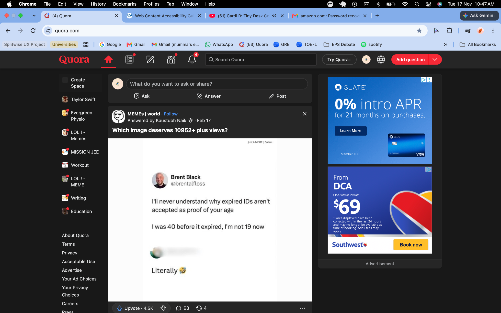
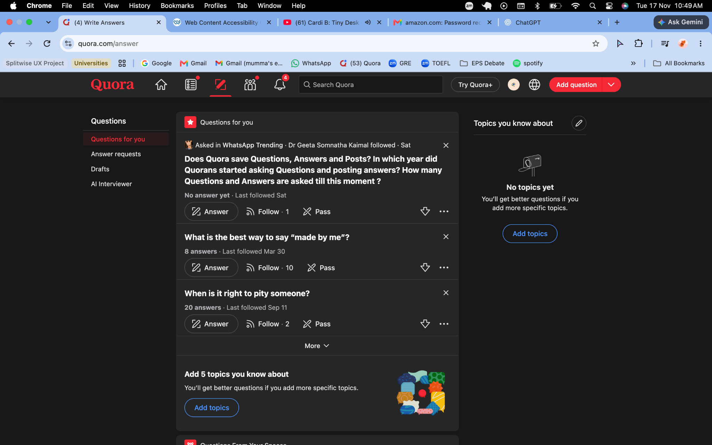
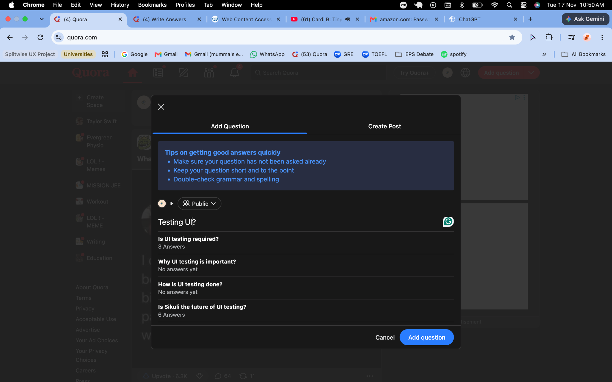
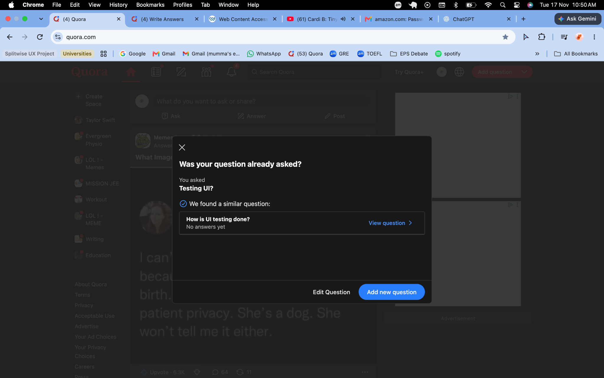
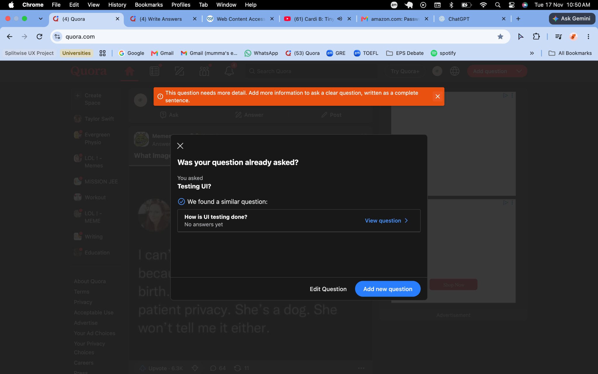
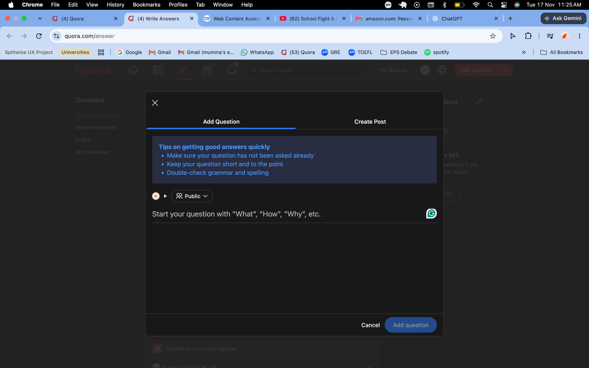
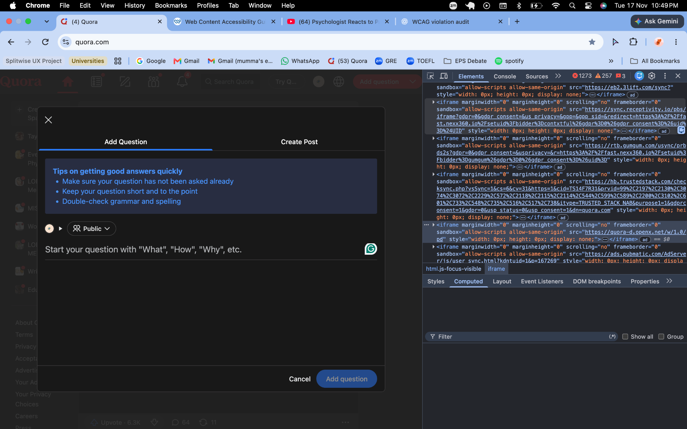

Mouse
Used to follow the intended visual journey and identify the main controls, dialogs and messages.
A manual accessibility evaluation · November 2026
An accessibility review of Quora's question-creation experience, viewed through keyboard navigation, Apple VoiceOver and a first-pass inspection of the interface.
01 — Context
Quora is essentially a Q&A platform, where users can ask questions, answer questions or interact with popular questions and their answers.
It used to be popular around 2015, and since the rise of platforms like Tumblr and Twitter, it has lost some of its popularity. The way users interact with Quora now can include asking redundant questions, such as “What screenshot deserves 20,000+ likes?” The feed can feel increasingly dominated by repetitive or bot-like content rather than genuine exchanges between users.
I chose Quora because even in preliminary testing, several accessibility challenges became apparent: content is often embedded in images, there are multiple post-writing options, and advertisements compete with the main content for attention.
This audit focuses on one specific task: a new user trying to add a question.
02 — Method
Used to follow the intended visual journey and identify the main controls, dialogs and messages.
Tested reaching the Add Question control, opening the modal and interacting with the duplicate-question warning. The flow was not easy to operate using only the keyboard.
Used the built-in macOS screen reader with Chrome. Navigation was difficult to interpret: some announced elements were hard to map to the visible interface, and the modal, reading order and validation feedback raised concerns.
Chrome DevTools was opened for follow-up inspection. The first selected node was an advertising iframe, so the relevant question-field and dialog markup still needs to be captured before code-level failures can be confirmed.
Testing note: Screen-reader unfamiliarity affected the experience. This is recorded as a usability reflection, not automatically as a WCAG failure. A second pass with more VoiceOver practice would help separate interface barriers from learning-curve effects.
03 — Task flow
The audit follows the path from the Quora feed to a question submission that triggers duplicate detection and validation feedback.
The user lands on a dense feed with global navigation, a left sidebar, posts and advertisements.
View screenshot 01The user navigates to the writing area, where suggested questions and answer actions are presented.
View screenshot 02The user opens the question-creation dialog, which includes tabs, a visibility control, a text-entry area and a submit button.
View screenshot 03After entering “Testing UI?”, Quora presents a similar existing question and offers two possible actions.
View screenshot 04A message asks the user to add more detail and write a complete sentence.
View screenshot 0504 — Evidence
Each image has descriptive alternative text. Select an image to open a larger version in a separate browser tab.

Navigation, image-based post content and advertisements share the same viewport.

Suggested questions, actions and topic prompts require a clear reading and focus order.

Tabs, instructions, visibility and the input area create several interaction points.

Dynamic content and focus management should be checked with a screen reader and keyboard.

The message should be announced, understandable and associated with the relevant field.

Check whether user-entered content is preserved when an error or duplicate warning occurs.
The screenshots below document the inspection attempt. They do not establish the semantics of Quora's question field or dialog. Those elements need to be selected directly before making code-level claims.

NEXT — THE FINDINGS
Move from the observed journey to the relevant WCAG criteria, the evidence still needed, and accessible alternatives.
View guidelines and design recommendations